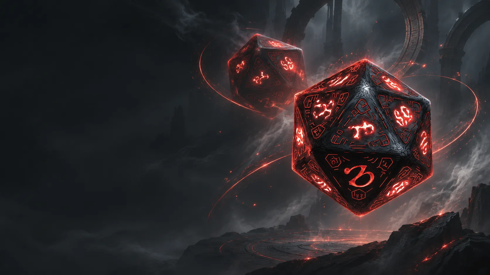
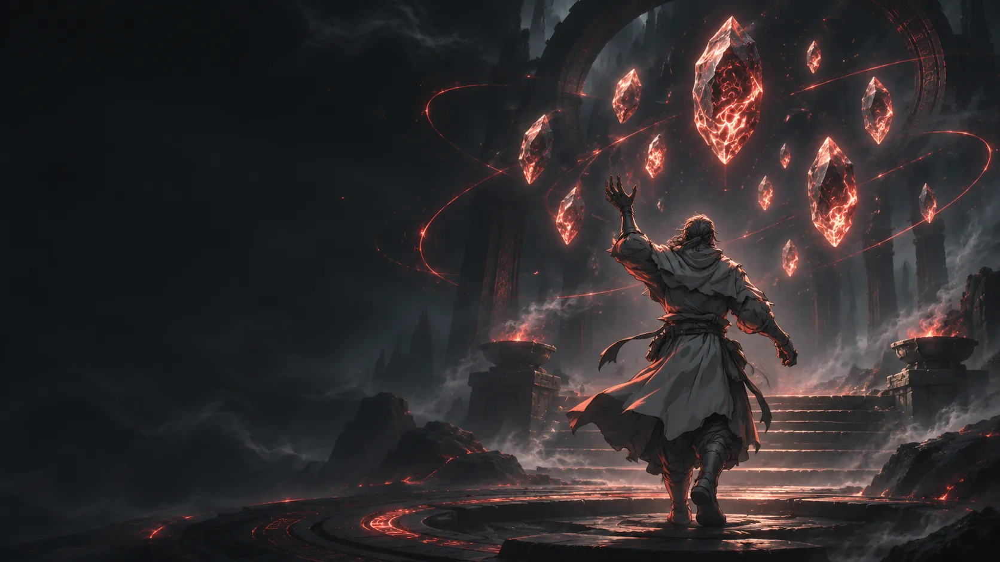
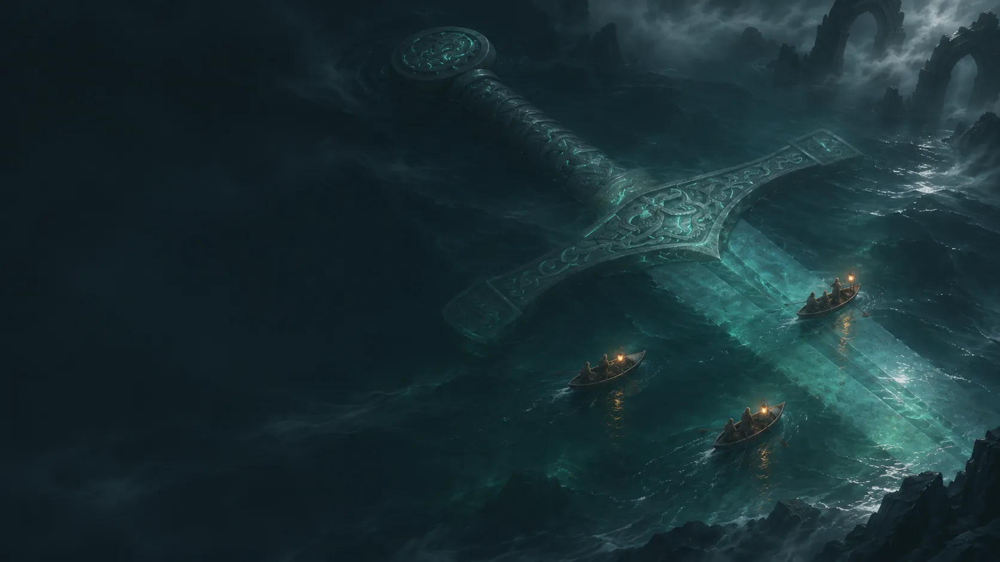
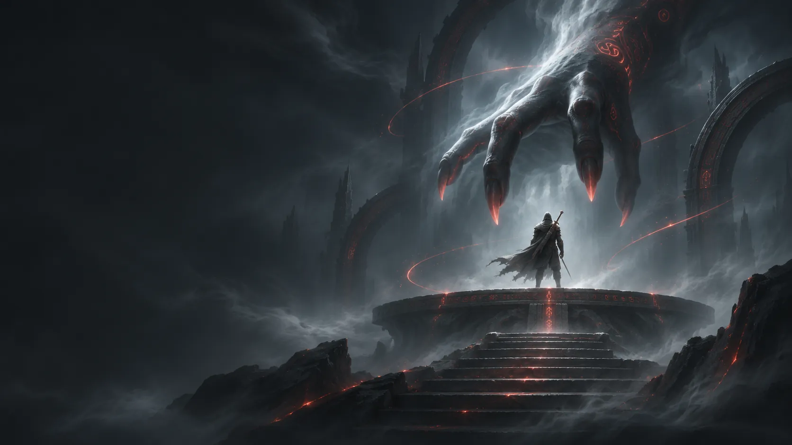

01CORE CHECKS
2d20
ПРОВЕРКИ
2d20
Сумма двух d20 + модификаторы против сложности. Критический резонанс, дубли и единый язык преимуществ.
Восемь подробных интерактивных руководств — с пошаговыми правилами, наглядными примерами и собственными мини-демонстрациями. Выберите модуль, чтобы открыть его страницу.

Сумма двух d20 + модификаторы против сложности. Критический резонанс, дубли и единый язык преимуществ.
Шесть атрибутов, создание персонажа, Здоровье, Скорость, отдых и развитие.
Маршруты между локациями, доступность территорий и открытия на карте Таоса. Исследование, пути и решения Мастера.
Скорость формирует инициативу. В ход доступны Движение, Основное и Малое действия; одна Реакция работает между ходами. Состояния создают цепочки, а сильные приёмы накапливают Усталость.

Пять Кругов магии, Мана 5 на старте, усиленная стоимость ×2, источники и направления.
Метки, Кровотечение, Яд, Уязвимость, Усталость и жёсткий контроль работают через стаки, длительность и сопротивление.

10 слотов инвентаря, сумки, экипировка, качество, прочность, редкость, стоимость и расходники.

Базовый класс 1–3, Путь 4–6, Перелом на 7, Истинный класс 8–9 и капстоун на 10 уровне.